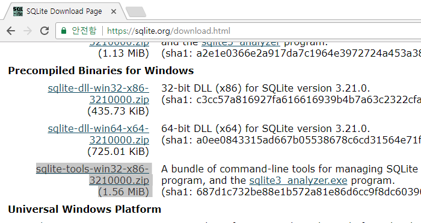
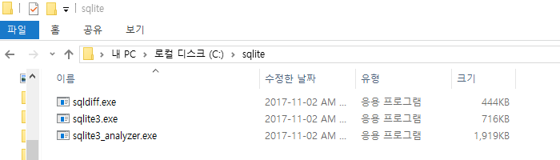
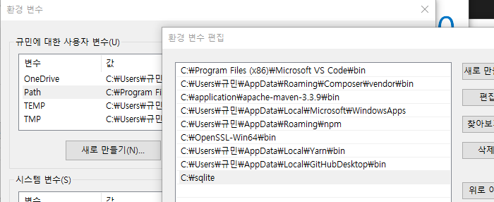
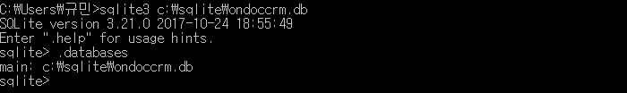

Install
https://sqlite.org/download.html
아래의 페이지에서 sqlite-tools-win32-x86-xxxxxx.zip파일을 다운로드 받아서 압축을 풀면 sqldiff.exe, sqlite.exe, sqlite3_analyzer.exe파일이 있다.

C:\sqlite3폴더를 생성하여 아래와 같이 위의 파일들을 위치시킨다.

환경변수에서 path에 C:\sqlite3를 추가한다.

command창에서 아래와 같이
sqlite3 db명을 실행하면 sqlite의 명령 프롬프트가 나타난다.
명령어 프롬프트에서 명령을 실행할 경우 기존에 db가 존재하지 않으면 db파일이 생성된다.
sqlite3 c:\sqlite\ondoccrm.db
